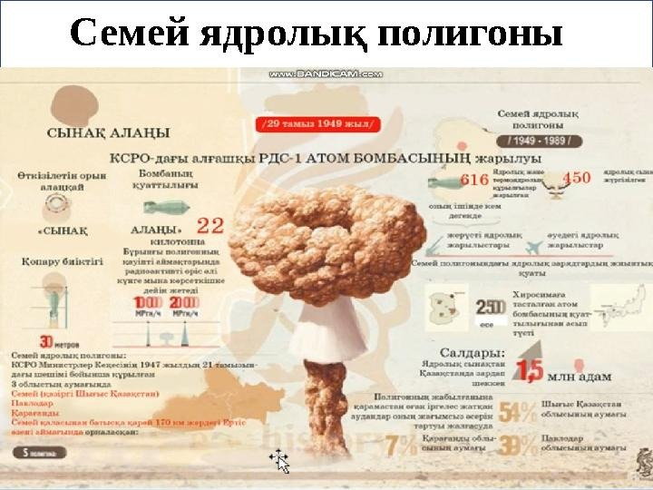
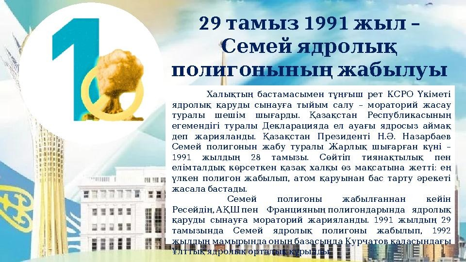
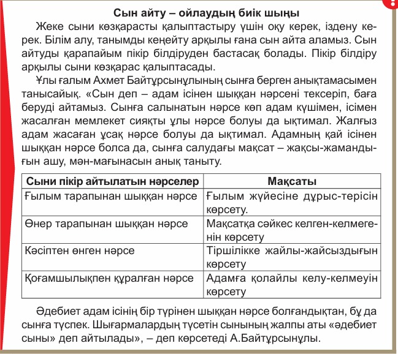
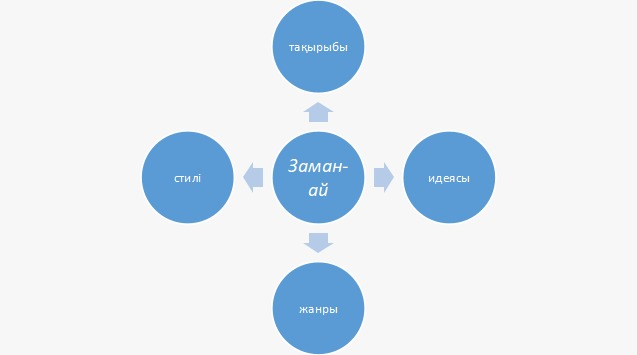

14-ТАПСЫРМА (СӨЖ № 14.1)
Семей полигонының зардабы
I. Теориялық кешен (дәріс тезистері)
Мақсаты: Семей ядролық сынақ полигонының пайда болу себептерін, оның адамдар мен табиғатқа тигізген зиянды зардаптарын түсініп, ядролық қаруға қарсы қозғалыстың маңыздылығын дәлелдермен жеткізеді.
Міндеттері: Оқушылар Семей ядролық сынақ полигонының ашылу тарихы мен мақсатын зерттейді; Ядролық сынақтардың адам денсаулығына, табиғатқа, қоршаған ортаға тигізген әсерін түсінеді. Ядролық сынақтардың салдарын мысалдар арқылы талдайды.
Бағалау критерийлері: Мәтінде көтерілген мәселеге талқылау сұрақтарын құрастырады; Мәтінде көтерілген мәселені сыни тұрғыда бағалайды.
Дәрістің қысқаша тезистері
Семей ядролық полигоны – КСРО-ның ең ірі ядролық сынақ алаңдарының бірі. 1949 жылдан 1989 жылға дейін мұнда 460-тан астам ядролық және термоядролық жарылыс жасалды. Сынақтар аймақтың экологиясына, флорасы мен фаунасына және жергілікті халықтың денсаулығына орасан зор зардабын тигізді. Олжас Сүлейменов бастаған «Невада – Семей» халықаралық антиядролық қозғалысының нәтижесінде және Қазақстан Республикасының Тұңғыш Президентінің Жарлығымен 1991 жылы 29 тамызда полигон ресми түрде жабылды.
1-сурет: Семей ядролық сынақ полигонының тарихы мен сынақтар алаңы
Ядролық сынақтар салдарынан 1,3 миллионнан астам адам әртүрлі дәрежедегі радиациялық сәулеленуге ұшырады. Радиактивті шаң-тозаң мыңдаған гектар жерді, су көздерін ластап, ауыр аурулардың көбеюіне әкеп соқты. Семей полигонының жабылуы – бүкіл адамзат үшін бейбітшілік пен қауіпсіздікке жасалған тарихи қадам болды.

2-сурет: Ядролық сынақтардың зардаптары мен «Невада – Семей» қозғалысы
Бақылау сұрақтары:
- Семей ядролық полигонында қанша ядролық және термоядролық жарылыс жасалды?
- Атом бомбасынан зардап шеккен халыққа алғаш рет қашан ескерту жасала бастады?
- «Невада – Семей» қозғалысының алғашқы митингі қашан және қайда өтті?
- Семей ядролық полигоны қашан ресми түрде жабылды?
- Полигоннан зардап шеккен халықтың саны қанша адам деп тіркелген?
Тапсырманы орындау бойынша нұсқаулық (орындау тәртібі):
- Мәтінді түсініп оқиды, мәтіннен түсінгенін айтады;
- Ережелерді оқып, есте сақтап алады;
- Сұрақтарға жауап береді.
Тапсырмадан күтілетін нәтиже: Берілген ақпаратты оқу, есте сақтап алу, сұрақтарға жауап беру.
Тапсыру формасы: Ауызша түрде.
Модуль / пән бойынша ұсынылатын әдебиеттер тізіміне сілтемелер: Okulyk.kz - Семей полигонының зардабы
II. Практикалық кешен (СӨЖ № 14.2)
1-тапсырма. Мәтінді түрлендіру және грамматикалық талдау
Тапсырма: Көркемдік құралдардың көмегімен оқылым мәтінінің бір бөлігін түрлендіріп жазыңдар. Өзгерістерді көрсетіңдер. Ырықсыз етістіктерді табыңдар.
| Мәтіннің бастапқы бөлігі | Мәтіннің өзгертілген бөлігі |
|---|---|
| |
|
2-тапсырма. Дүниежүзілік полигондарға шолу
Тапсырма: Дүниежүзіндегі сынақ өткізілген полигондар туралы қосымша әдебиеттерден мәлімет жинақтаңдар. Сілтеме жасай отырып, шолу жасаңдар.

1-сурет: Дүниежүзілік ядролық сынақ полигондарының шолу картасы
3-тапсырма. Менталды карта толтыру («Заман-ай» әні)
Тапсырма: Ән мәтінімен танысыңдар. «Полигон зардаптары» тақырыбында жазылған ән мәтініне менталды карта толтырыңыздар.
Заман-ай
Әнін жазған – Төлеген Мұхамеджанов
Сөзін жазған – Ұлықбек Есдәулет
Ұлдарыңның қайда кеткен құрығы,
Қыздарыңның қайда кеткен бұрымы?
Мейірімге зарықтырған заман-ай,
Заман-ай, заман-ай,
Туған жердің лайланды-ау тұнығы!
Қайран елім, қайран жерім, қор болған-ай,
Жомарттығы сор болған-ай,
Жарылыстан көз ашпаған далам-ай!
Қираттық та ата-баба мазарын,
Қасіреттің тарттық енді азабын.
Қоң етіңді ойып берген, заман-ай,
Заман-ай, заман-ай,
Көсілетін көрпең қайда, қазағым?

2-сурет: «Өлімнен де күшті» мемориалы және «Заман-ай» әнінің рухы
4-тапсырма. Шығармашылық жұмыс (Өлең, әңгіме, эссе)
Тапсырма: Көркемдік құралдарды ұтымды қолданып, бүгінгі тақырып бойынша өлең, әңгіме немесе шығарма жазыңдар.
Үлгі:
Жарылыстан тау мен тасым үгілді,
Халық жүдеп, бұл жағдайдан түңілді.
91-де жабылып бұл полигон,
Ядролық орталықтар құрылды...

3-сурет: «Полигон зардаптары» тақырыбындағы менталды/семантикалық карта
Модуль / пән бойынша ұсынылатын әдебиеттер тізіміне сілтемелер: Okulyk.kz - Семей полигонының зардабы
III. Бағалау парағы
| № | Тапсырма | Дескрипторлар | Ұпай саны | Студенттің ұпай саны |
|---|---|---|---|---|
| 1 | Бақылау сұрақтары: |
• Мәтінді түсініп оқиды, түсінгенін айтады; • Сұрақтарға жауап береді |
10 балл 10 балл |
|
| 2 | Кестені толтыру (Мәтінді түрлендіру) |
• Көркемдік құралдардың көмегімен оқылым мәтінінің бір бөлігін түрлендіріп жазады; • Өзгерістерді көрсетіп, ырықсыз етістіктерді табады |
10 балл 10 балл |
|
| 3 | Дүниежүзілік полигондар туралы мәлімет жинақтау | • Сілтеме жасай отырып шолу жасайды | 20 балл | |
| 4 | «Полигон зардаптары» тақырыбында менталды карта толтыру | • Менталды карта толтырады | 10 балл | |
| 5 | Көркемдік құралдарды қолданып өлең, әңгіме немесе шығарма жазу | • Тақырып бойынша өлең, әңгіме немесе шығарма жазады | 30 балл | |
| Барлығы: | 100 балл | / 100 | ||